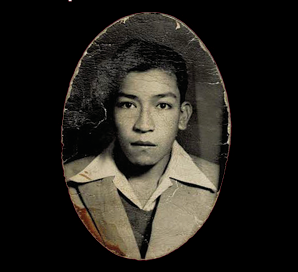

Carlos Humberto Valencia: recuperamos a un pintor desaparecido en el 68
Pável Granados
Sección: De par en par la ventana



En este primer número del Bachiller usamos los once grabados que el pintor
Carlos Humberto Valencia hiciera para ilustrar la novela Tenemos sed, de
Magdalena Mondragón. Fue un pintor nacido en la colonia Doctores de la Ciudad
de México, y que desapareció, presumiblemente, en los sucesos de Tlatelolco, el
2 de octubre de 1968, ya que quizá se encontraba en ese lugar durante la
represión del gobierno de Díaz Ordaz, pues era uno de los artistas que hizo
carteles para la manifestación de ese día.
No tenemos muchos datos de él, porque su familia entregó al Ministerio Público su
acta de nacimiento cuando presentó los documentos para dejar constancia de su
desaparición. Pero se sabe que sus padres eran originarios del Estado de México:
Emilia Muñoz Ramírez, de Nepantla, y Gil Valencia García, de Atlautla. El matrimonio
vivió en la calle de Colombia 82, frente al mercado Abelardo Rodríguez, en donde
Humberto pasó su infancia. Con el tiempo, pudo documentar que, de parte de su madre,
tenía una relación familiar con sor Juana, por lo que Norberto San Vicente,
sorjuanista y presidente municipal de Nepantla (1943-1946), le concedió las
llaves del pueblo.
Fue discípulo de Diego Rivera y alumno de la Academia de San Carlos y de La Esmeralda.
Junto con sus condiscípulos, Jorge Antonio Corona Noriega, Valeriano Maldonado, Sixto
Santillán, Fego Cuéllar, Manuel Landa, Enrique Núñez, Cutberto Galván, Alejandro Plata,
Lidia y Lucrecia Huerta, formó parte del Grupo Cuña, que se integró a raíz de que el
director de La Esmeralda, Guillermo Ruiz, los expulsara de la escuela, en 1940. Desde
entonces, con una visión en contra del academicismo artístico, este grupo se dedicó a
viajar por varios estados formando en las artes plásticas a jóvenes pintores, surgidos
de familias pobres. Según el estudioso Orlando S. Suárez, en su libro Inventario del
muralismo mexicano: siglo VII a. de C. (UNAM, 1972), el Grupo Cuña creó un taller
“en el local de la Juventud Española, cuyo objetivo era formar grupos de jóvenes que
pintaran libremente”.
Carlos Humberto Valencia vivió de su arte, de pintar murales y hacer carteles publicitarios.
Su familia recuerda que pintó un mural en un café que estaba un lado del Cine Lido (hoy
librería del FCE Rosario Castellanos). Muchas veces, por encargo de Diego Rivera, iba a
pintar a algunos negocios del centro de la Ciudad de México. Fue muy amigo de Magdalena
Mondragón, a la que visitaba en el Pedregal de San Ángel, en donde la periodista tenía
una casa con alberca y teatro. En Torreón, en una escuela que lleva el nombre de la periodista,
pintó los murales. Al morir, Magdalena Mondragón dejó su colección de arte a una escuela de
Torreón, pero años después se supo que había sido saqueada en su totalidad, por lo que se
perdieron las obras de Valencia que se encontraban en ella.
La casa del pintor estaba en la calle de Minería 82, en la colonia Escandón,
en donde él vivió hasta su desaparición. En esos momentos, mantenía un romance
con Ramona Quintero Ruiz, que vivía en Cozumel 53, en la colonia Roma. En casa
de ella, decoró un cuarto que estaba detrás de la cochera, debajo de las escaleras,
y que no se sabe si aún existe. Su familia durante muchos años iba a esa casa
a preguntar si había alguna información del pintor. Primero su madre, luego su
hermana Angelina Valencia Muñoz y, finalmente, su sobrina, Marina Xóchitl Valencia.
Contamos estos datos gracias a esta última y a su hijo, Roberto Rodríguez, quienes
guardan de este pintor dos cuadros, algunas fotos y pistas de dónde puede existir más obras suyas.
La vida de algunos artistas suele estar cubierta de misterio, en el caso de Carlos
Humberto Valencia, además de una profunda nostalgia de parte de su familia. Las
obras que mostramos aquí son un recuerdo de su labor en las artes plásticas y un
testimonio de su vida y su pasión más alta.